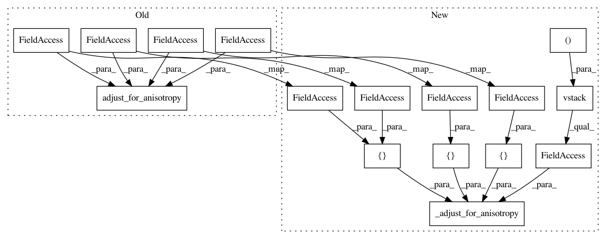

9b1af381e74ae4e967c0a3878353b3256f0aadab,pykrige/uk.py,UniversalKriging,__init__,#UniversalKriging#Any#Any#Any#Any#Any#Any#Any#Any#Any#Any#Any#Any#Any#Any#Any#Any#Any#Any#Any#,235
Before Change
point_log = np.atleast_2d(np.squeeze(np.array(point_drift, copy=True)))
self.point_log_array = np.zeros(point_log.shape)
self.point_log_array[:, 2] = point_log[:, 2]
x_adj, y_adj = core.adjust_for_anisotropy(point_log[:, 0], point_log[:, 1], self.XCENTER, self.YCENTER,
self.anisotropy_scaling, self.anisotropy_angle)
self.point_log_array[:, 0] = x_adj
self.point_log_array[:, 1] = y_adj
if self.verbose:
After Change
point_log = np.atleast_2d(np.squeeze(np.array(point_drift, copy=True)))
self.point_log_array = np.zeros(point_log.shape)
self.point_log_array[:, 2] = point_log[:, 2]
self.point_log_array[:, :2] = _adjust_for_anisotropy(np.vstack((point_log[:, 0], point_log[:, 1])).T,
[self.XCENTER, self.YCENTER],
[self.anisotropy_scaling],
[self.anisotropy_angle])
if self.verbose:
print("Implementing external point-logarithmic drift; number of points =",
self.point_log_array.shape[0], "\n")
In pattern: SUPERPATTERN
Frequency: 3
Non-data size: 16
Instances
Project Name: bsmurphy/PyKrige
Commit Name: 9b1af381e74ae4e967c0a3878353b3256f0aadab
Time: 2017-01-27
Author: rth.yurchak@gmail.com
File Name: pykrige/uk.py
Class Name: UniversalKriging
Method Name: __init__
Project Name: bsmurphy/PyKrige
Commit Name: 9b1af381e74ae4e967c0a3878353b3256f0aadab
Time: 2017-01-27
Author: rth.yurchak@gmail.com
File Name: pykrige/uk.py
Class Name: UniversalKriging
Method Name: execute
Project Name: bsmurphy/PyKrige
Commit Name: 9b1af381e74ae4e967c0a3878353b3256f0aadab
Time: 2017-01-27
Author: rth.yurchak@gmail.com
File Name: pykrige/ok.py
Class Name: OrdinaryKriging
Method Name: execute